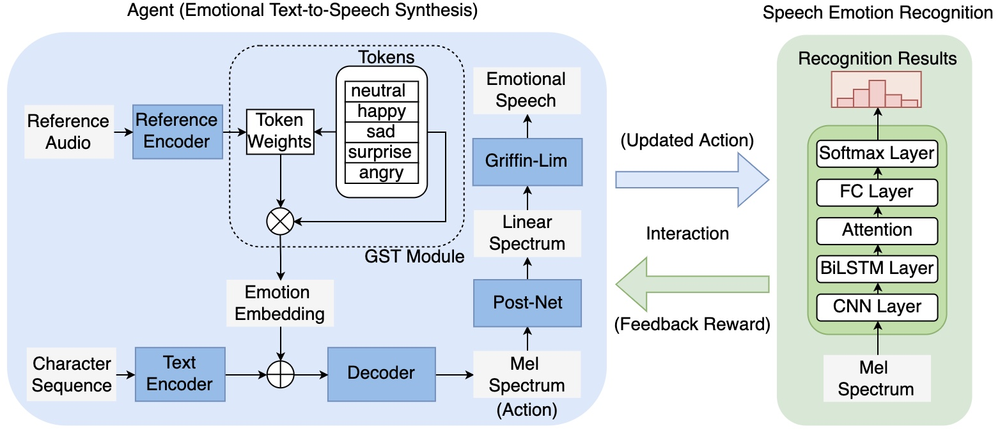

Abstract:
Emotional text-to-speech synthesis (ETTS) has seen much progress in recent years. However, the generated voice is often not perceptually identifiable by its intended emotion category. To address this problem, we propose a new interactive training paradigm for ETTS, denoted as i-ETTS, which seeks to directly improve the emotion discriminability by interacting with a speech emotion recognition (SER) model. Moreover, we formulate an iterative training strategy with reinforcement learning to ensure the quality of i-ETTS optimization. Experimental results demonstrate that the proposed i-ETTS outperforms the state-of-the-art baselines by rendering speech with more accurate emotion style. To our best knowledge, this is the first study of reinforcement learning in emotional text-to-speech synthesis.

Fig. 1: Block diagram of the proposed interactive paradigm for emotional text-to-speech synthesis with reinforcement learning.
Fig. 1: Block diagram of the proposed interactive paradigm for emotional text-to-speech synthesis with reinforcement learning.
We implement two baseline systems together with the proposed i-ETTS, as summarized next.:
1. MTL-ETTS [1] : An emotional TTS model that jointly trains an auxiliary SER task with the TTS model;
2. CET-ETTS [2]: An emotional TTS model that uses two reference encoders with SER module and perceptual loss to enhance the emotion-discriminative ability.
3. i-ETTS : the proposed i-ETTS that optimizes the ETTS model with a reward function correlated with the SER accuracy.
Synthesized audios:
| [Emotion] | MTL-ETTS | CET-ETTS | I-ETTS | |
|---|---|---|---|---|
| Neutral | 01 (Speaker: 0020) |
|||
| 02 (Speaker: 0013) |
||||
| 03 (Speaker: 0012) |
||||
| Happy | 01 (Speaker: 0018) |
|||
| 02 (Speaker: 0016) |
||||
| 03 (Speaker: 0012) |
||||
| Sad | 01 (Speaker: 0019) |
|||
| 02 (Speaker: 0018) |
||||
| 03 (Speaker: 0014) |
||||
| Surprise | 01 (Speaker: 0018) |
|||
| 02 (Speaker: 0017) |
||||
| 03 (Speaker: 0014) |
||||
| Angry | 01 (Speaker: 0020) |
|||
| 02 (Speaker: 0019) |
||||
| 03 (Speaker: 0017) |
Audio samples from training dataset:
| [Speaker] | Neutral | Happy | Sad | Surprise | Angry |
|---|---|---|---|---|---|
| 0011 [Male] | |||||
| 0012 [Male] | |||||
| 0013 [Male] | |||||
| 0014 [Male] | |||||
| 0015 [Female] | |||||
| 0016 [Female] | |||||
| 0017 [Female] | |||||
| 0018 [Female] | |||||
| 0019 [Female] | |||||
| 0020 [Male] |
References
[1] Cai, Xiong, et al. "Emotion controllable speech synthesis using emotion-unlabeled dataset with the assistance of cross-domain speech emotion recognition." To appear at ICASSP 2021.[2] Li, Tao, et al. "Controllable Emotion Transfer For End-to-End Speech Synthesis." 12th International Symposium on Chinese Spoken Language Processing (ISCSLP). IEEE, pp: 1-5, 2021.